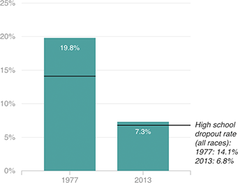

Dropout Rates
African-American high school dropout rates have fallen since 1977 and today are more in line with the national rate. As of 2013, the African-American dropout rate was only about half a percentage point higher than the national rate.
